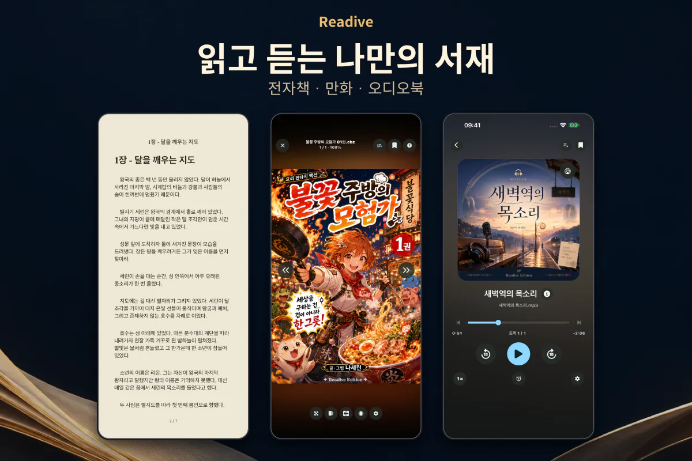

내 기기와 원격 보관함
기기 파일과 NAS·클라우드의 책을 가져오고, 제목과 책 정보로 검색하세요. 컬렉션으로 읽고 싶은 책을 따로 묶을 수 있습니다.
iPhone · iPad · Android
기기나 NAS에서 책을 가져오세요. 만화는 두 쪽으로 펼쳐 보고, 전자책은 읽던 구절부터 음성으로 들을 수 있습니다.

기기에 저장한 책은 오프라인에서도 열 수 있습니다. 지금 읽기에서 읽던 책을 다시 열거나, 보관함에서 다음 책을 골라 보세요.
기기 파일과 NAS·클라우드의 책을 가져오고, 제목과 책 정보로 검색하세요. 컬렉션으로 읽고 싶은 책을 따로 묶을 수 있습니다.
만화는 펼침 보기로, 웹툰은 세로 스크롤로 읽으세요. EPUB·TXT는 읽어주기를 켤 수 있고 오디오북은 듣던 지점부터 재생합니다.
다음에 읽을 책이 망설여지면 오늘의 추천을 열어 보세요. 내 기기에 있는 읽지 않은 단권과 시리즈 첫 권 중에서 한 권을 골라 줍니다.
기기를 선택해 폰, 태블릿, 폴드에서 보관함과 독서 화면이 어떻게 달라지는지 비교해 보세요.
계속 읽기에서 최근 열었던 책을 고르면 마지막으로 읽던 곳이 열립니다.
처음 사용하는 분을 위해 책을 넣고, 읽고 듣고, PC의 서재와 연결하는 순서를 정리했습니다.
기기 파일, PC, NAS와 클라우드에서 책을 가져오고 오프라인으로 읽을 준비를 합니다.
글자와 여백을 조절하고 TTS로 본문을 듣는 방법, 기본 기능과 Premium의 차이를 살펴봅니다.
QR 코드로 PC와 연결해 책을 가져오고, 읽던 위치를 이어가는 방법을 안내합니다.
기기에서 파일을 고르거나, 평소 사용하는 저장소에 연결하세요. 읽을 책을 미리 내려받아 두면 이동 중에도 네트워크 연결 없이 감상할 수 있습니다.
책의 형식과 화면 크기에 맞춰 읽는 방식을 선택하세요. 휴대전화의 한 손 독서부터 태블릿의 펼침 보기까지, 취향에 맞게 조절할 수 있습니다.
자동 보기에서 세로로 긴 웹툰은 스크롤로 읽고, 일반 만화는 화면에 맞춰 한 쪽 또는 두 쪽으로 봅니다. 이미지 필터는 현재 페이지에서 원본과 비교할 수 있습니다.
글자 크기, 줄 간격, 여백과 배경을 내 눈에 편하게 맞추세요. 라이트·다크·E-Ink 테마를 기본으로 사용할 수 있습니다.
EPUB·TXT에서는 문장에 색을 입혀 저장하세요. 하이라이트 화면에서 책·색상·날짜로 좁혀 찾고, 선택한 문장이 있는 페이지로 돌아갈 수 있습니다.
이동하거나 다른 일을 하는 동안에는 듣는 독서로 바꿔보세요. 오디오북을 재생하거나 EPUB·TXT의 본문을 음성으로 들을 수 있습니다.
짧게 읽은 시간도 기록으로 남습니다. 최근 읽은 책과 북마크를 모아 보고, 같은 플랫폼의 다른 기기에서도 읽던 위치를 이어가세요.
최근 읽던 책을 홈에서 다시 열고, 책과 오디오북에 남긴 북마크를 모아 확인하세요.
독서 캘린더에는 책 표지가 날짜별로 표시됩니다. 궁금한 날을 누르면 그날 읽은 책과 독서 시간을 확인할 수 있습니다.
동기화를 켜면 같은 계정·같은 플랫폼의 기기끼리 보관함 정보, 읽던 위치, 북마크와 독서 기록을 공유할 수 있습니다.
iPhone·iPad는 iCloud, Android 기기는 Google Drive로 기록을 동기화합니다. iOS와 Android 사이의 동기화는 지원하지 않으며, 책 원본은 각 기기에 별도로 가져와야 합니다.
BookManager 연동
BookManager로 PC에 정리한 책을 모바일에서 탐색하고 가져오세요. 책 정보와 읽던 위치도 함께 연결합니다.
두 기기가 같은 로컬 네트워크나 Tailscale에 연결되어 있으면 BookManager의 QR 코드를 스캔하거나 PC의 IP 주소와 포트를 입력하세요. PC에서 연결을 승인하면 공유 라이브러리를 둘러볼 수 있습니다.
Readive에서 파일·폴더를 가져오거나 PC에서 보낸 책을 확인해 수락합니다. 연결된 책은 읽던 위치와 읽기 상태, 별점을 동기화할 수 있습니다.
연동 중에는 PC의 BookManager와 모바일의 Readive가 실행 중이어야 합니다. Readive는 BookManager 없이도 기기 파일과 원격 저장소로 사용할 수 있습니다.
CBZ, ZIP, CBR, RAR, CB7, 7Z, CBT, TAR와 이미지 파일
EPUB, PDF, TXT, Markdown
MP3, M4A, M4B, FLAC 등 오디오 파일
압축 만화는 단일 볼륨 파일을 지원합니다. 암호가 걸린 ZIP·RAR·7z는 책을 열 때 비밀번호를 입력하세요.
기기로 책을 가져와 읽고 듣는 기능은 무료입니다. 추가 글꼴과 음성, 자세한 독서 통계는 Premium에서 이용할 수 있습니다.
Premium 구매 옵션은 월간 구독, 연간 구독, 평생 이용권입니다. 이용 가능한 상품과 가격은 앱의 Premium 화면에서 확인하세요.
보관함의 웹에서 찾기(실험 기능)를 열어 보세요. Project Gutenberg의 전자책과 LibriVox의 오디오북을 찾아 내려받을 수 있습니다. 작품별 이용 조건은 각 출처에서 확인하세요.
Readive 자체 회원가입 없이 기기의 파일을 가져와 사용할 수 있습니다. NAS나 클라우드 연결에는 해당 저장소의 계정이 필요할 수 있습니다. BookManager 연동은 PC 라이브러리를 함께 사용하는 선택 기능입니다.
기기에 가져오거나 다운로드한 책과 오디오북은 오프라인에서도 열 수 있습니다. 원격 저장소 탐색·다운로드와 기록 동기화에는 네트워크가 필요합니다. Supertonic 음성은 Premium에서 모델을 먼저 내려받으면 기기 안에서 생성할 수 있습니다.
클라우드 동기화는 보관함 정보와 독서 기록을 연결합니다. 책 원본 파일은 각 기기에 별도로 가져와야 하며, 같은 계정의 iPhone·iPad끼리 또는 Android 기기끼리 사용할 수 있습니다.
Readive를 설치하고 기기의 책 파일을 가져오세요. 내 방식으로 읽고 듣는 서재가 시작됩니다.